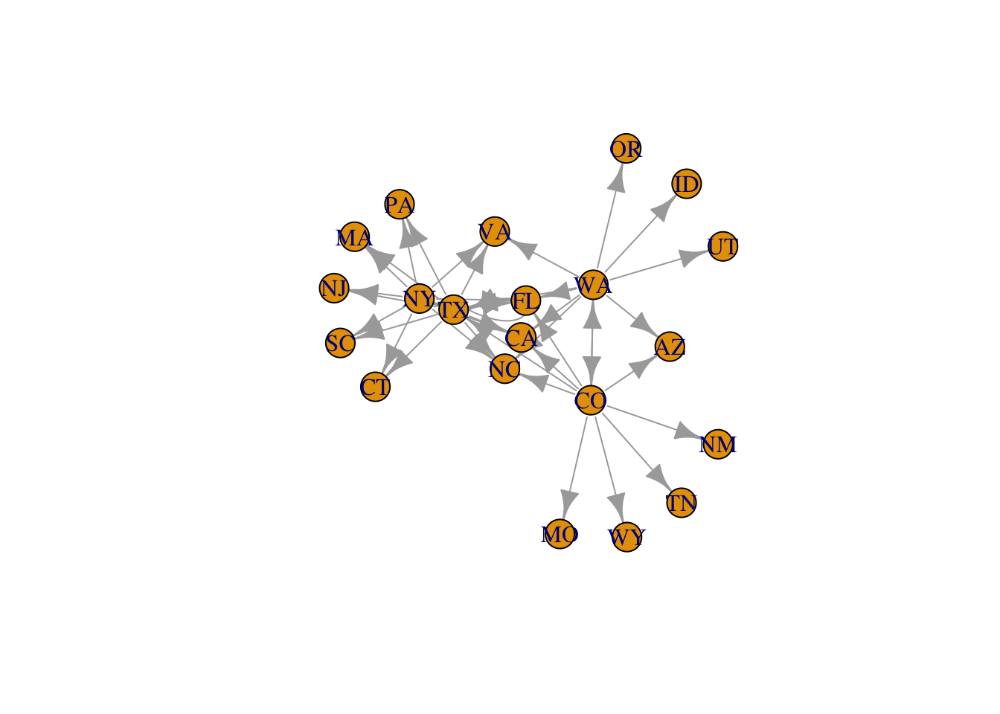
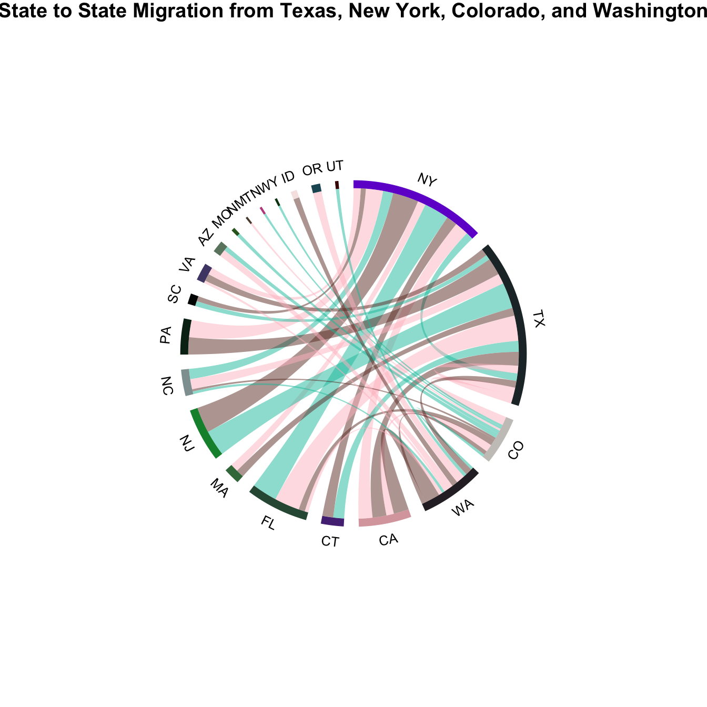

library(tidyverse)
library(readxl)
library(dplyr)
getwd()## [1] "/Users/gabriellazakrocki/Desktop/ANLY503_fall/ANLY503_Portfolio/anly503-fall2020-a7-zakrocki-gabriella_copy"migs <- read_xls("data/State_to_State_Migrations_Table_2018.xls", sheet = "Table", cell_rows(6:78))## New names:
## * `Current residence in` -> `Current residence in...1`
## * `` -> ...3
## * `` -> ...5
## * `` -> ...7
## * `` -> ...9
## * ...Will be looking at New York, Texas, Washington, and Colorado as origin states and then will show the relative numbers of people that moved to the top 10 destination states (current state, in the data set).
# New York data gathering
# want columns : "Current residence in...78" and "...81"
ny <- migs %>%
select("Current residence in...78", "...81")
colnames(ny) <- c("target", "ppl_count")
ny$ppl_count <- as.numeric(ny$ppl_count)## Warning: NAs introduced by coercionny <- ny[-(1:5), , drop = FALSE] %>%
drop_na() %>%
top_n(10, ppl_count) # choosing the top 10 destination states from NY
ny_final <- data.frame(append(ny, c(source = 'NY'), after = 0)) # creating a source column # Texas data gathering
# want columns : "Current residence in...100" and "...105"
texas <- migs %>%
select("Current residence in...100", "...105")
colnames(texas) <- c("target", "ppl_count")
texas$ppl_count <- as.numeric(texas$ppl_count)## Warning: NAs introduced by coerciontexas <- texas[-(1:5), , drop = FALSE] %>%
drop_na() %>%
top_n(10, ppl_count) # choosing the top 10 destination states from TX
texas_final <- data.frame(append(ny, c(source = 'TX'), after = 0)) # creating a source column # Colorado data gathering
# Want columns : "Current residence in...12" and "...21"
colo <- migs %>%
select("Current residence in...12", "...21")
colnames(colo) <- c("target", "ppl_count")
colo$ppl_count <- as.numeric(colo$ppl_count)## Warning: NAs introduced by coercioncolo <- colo[-(1:5), , drop = FALSE] %>%
drop_na() %>%
top_n(10, ppl_count) # choosing the top 10 destination states from CO
colo_final <- data.frame(append(colo, c(source = 'CO'), after = 0)) # creating a source column # Washington data gathering
# Want columns : "Current residence in...111" and "...114"
wash <- migs %>%
select("Current residence in...111", "...114")
colnames(wash) <- c("target", "ppl_count")
wash$ppl_count <- as.numeric(wash$ppl_count)## Warning: NAs introduced by coercionwash <- wash[-(1:5), , drop = FALSE] %>%
drop_na() %>%
top_n(10, ppl_count) # choosing the top 10 destination states from WA
wash_final <- data.frame(append(wash, c(source = 'WA'), after = 0)) # creating a source column # merging all 4 dataframes into one
networks <- rbind(ny_final, texas_final, colo_final, wash_final)
networks$target[networks$target == "California"] <- "CA"
networks$target[networks$target == "Florida"] <- "FL"
networks$target[networks$target == "Massachusetts"] <- "MA"
networks$target[networks$target == "Connecticut"] <- "CT"
networks$target[networks$target == "New Jersey"] <- "NJ"
networks$target[networks$target == "Missouri"] <- "MO"
networks$target[networks$target == "Pennsylvania"] <- "PA"
networks$target[networks$target == "South Carolina"] <- "SC"
networks$target[networks$target == "Virginia"] <- "VA"
networks$target[networks$target == "Arizona"] <- "AZ"
networks$target[networks$target == "New Mexico"] <- "NM"
networks$target[networks$target == "Tennessee"] <- "TN"
networks$target[networks$target == "Wyoming"] <- "WY"
networks$target[networks$target == "Idaho"] <- "ID"
networks$target[networks$target == "Oregon"] <- "OR"
networks$target[networks$target == "Utah"] <- "UT"
networks$target[networks$target == "Texas"] <- "TX"
networks$target[networks$target == "Washington"] <- "WA"
networks$target[networks$target == "North Carolina"] <- "NC"
networks$target[networks$target == "Colorado"] <- "CO"library(igraph)##
## Attaching package: 'igraph'## The following object is masked from 'package:circlize':
##
## degree## The following object is masked from 'package:plotly':
##
## groups## The following objects are masked from 'package:dplyr':
##
## as_data_frame, groups, union## The following objects are masked from 'package:purrr':
##
## compose, simplify## The following object is masked from 'package:tidyr':
##
## crossing## The following object is masked from 'package:tibble':
##
## as_data_frame## The following objects are masked from 'package:stats':
##
## decompose, spectrum## The following object is masked from 'package:base':
##
## unionlibrary(ggraph)##
## Attaching package: 'ggraph'## The following object is masked from 'package:sp':
##
## geometryg1 <- graph_from_data_frame(d = networks, vertices = unique(c(networks$source, networks$target)), directed = TRUE)
plot(g1)
library(viridis)
library(patchwork)
library(hrbrthemes)
library(circlize)
library(chorddiag)
circos.clear()
circos.par(start.degree = 90, gap.degree = 5, track.margin = c(-0.4, 0.4), points.overflow.warning = FALSE)
par(cex = 5, mar = rep(0, 4))
# color palette# Base plot
col_mat = rand_color(length(networks), transparency = 0.5)
chordDiagram(networks, annotationTrack = c("name", "grid"), col = c( "#ffc0cb", "#6c362c", "#0bc1aa") )
title(main = "State to State Migration from Texas, New York, Colorado, and Washington")